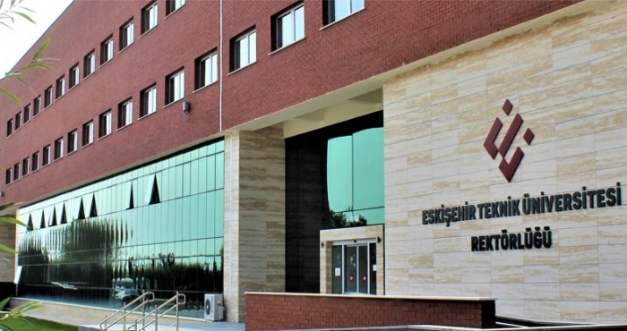

About Us
With the Law No. 7141 published in the Official Gazette No. 30425 on 18 May
With the Law No. 7141 published in the Official Gazette No. 30425 on 18 May 2018, Eskişehir Technical University, which is a cultural city, and 5 Faculties in 2 campuses in Eskişehir , which is also a science city, 5 Faculties, 2 Vocational Schools and It consists of 3 Institutes and 4 Research and Application Centers. Eskişehir Technical University can continue its competent education while advancing in education in education and teaching all its time, and from being trained in education, training and being trained to progress. The operation of the international Hasan Polatkan Airport in the 2 Eylül Campus of our university is carried out by our Faculty of Aviation and Space Sciences. Flights to Hasan Polat Airport take advantage of various quality vehicles of the week.
Devamını oku....
Number of Students And Staff
Number of Students : 9860
Nuber of Academical personal : 723
Number of Administrative Units : 237
Number of Worker Units : 439
Number of All Units : 1539